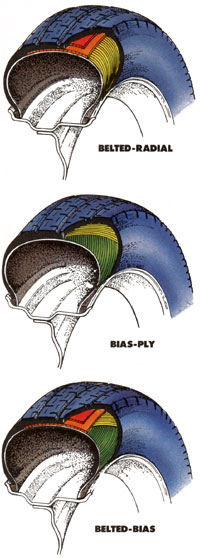
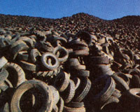

A glimpse into the complex task of choosing automobile tires.
Charles Goodyear knew he was onto something when, in 1839, he tossed a wad of raw rubber against a hot woodstove and discovered vulcanization. But, visionary though he may have been, the then-destitute inventor could hardly have imagined the capabilities of today's automobile tire.
Carcass Design
It almost goes without saying that you're in the market for a radial-ply tire. Almost, because the country dweller may be one of the few people who still have a reason other than plain stinginess to buy a bias-ply tire.
In every way save one, the radial is technically superior to the bias-ply. It lasts up to twice as long; it offers more traction-wet or dry; it runs quieter; it has as much as 20% less rolling resistance, which gives better fuel mileage. The one thing it doesn't do as well as the sturdy bygone is withstand heavy impacts-say, from a nasty pothole on a country lane or a rock on a logging road. Let's look at construction methods to see why.
A radial tire is built to flex. Its thin sidewalls, with plies laid perpendicular to the tire's circumference, allow the tread area to deflect easily as it rotates, which lowers rolling resistance. This sidewall flex, combined with the belt(s) wrapped around the circumference of the tire to hold shape and make the tread stiff side to side, helps the tread stay flat on the road in turns. The only significant penalty for the radial's flexibility is that a severe bump can collapse the sidewall, pinching it between the rim and belt and rupturing the plies.
The bias-ply, on the other hand, has several crisscrossed plies running from one side of the rim to the other at a 25° to 40° angle to each other. A circumferential belt is found on a derivative-the belted-bias tire-which may improve durability and tread wear but has little effect on handling. In either case, the combination of more material and triangulated plies dragging across each other makes the bias-ply's sidewalls stiffer than the radial's, producing a tire that's less compliant but better able to withstand rough treatment.
Carcass Materials
Below the tread, the rubber compounds used in the carcass of one tire differ little from those of another, generally being a mix of styrene-butadiene, polybutylene and perhaps some natural rubber. Add about 10 pounds of carbon black, oil extenders and wire in the bead (where the tire attaches to the rim), and you've got about 20 pounds of the typical 25-pound tire. None of these items are likely to receive much attention in a typical product brochure, so you'll probably have to take their quality on faith.
But the other five to seven pounds-the cords used to reinforce the plies and belts-may get some ink from the publicists. It's impossible to say categorically that one material is superior to another for making either ply cords (the crosswise components) or belt cords (the circumferential components). Nonetheless, each of the popular combinations has certain advantages and disadvantages worth reviewing.
Rayon is the most prevalent reinforcing material for plies these days. It has adequate heat resistance and adheres well to rubber, but it will develop a set, resulting in the characteristic thump of flat spots the first few miles in the morning. It's also not uncommon to find it in the multi-ply belt of a radial.
Despite its strength, nylon is becoming less popular, largely because it stretches, shrinks and develops flat spots. You'll mainly find it wrapped in the belts of high-performance tires, where shrinkage is an advantage because it holds other belts in place, and flat spotting is tolerable.
Polyester is almost as common as rayon on passenger car tires. It may be somewhat more resistant to the elements than rayon, and its only real disadvantage is that it shrinks if overheated. It's used in both plies and belts.
Fiberglass is quite strong and very resistant to heat but is intolerant of flexing and is easily cut. It can be found in the belts of a few specialty tires.
Aramids, such as Kevlar, are light, strong and durable, making them excellent for belts. Their only real disadvantages are bulk and cost.
Steel is rigid and strong, making it the allaround favorite for belts. Its few disadvantages include weight and a lack of adhesion to rubber.
Treads
Tire engineers laboring away at their computers may take umbrage at this statement, but those of us whose driving aspirations are somewhat lower than Mario Andretti's don't need to worry much about tread design. All we have to do is choose a tread type that's suitable to our climate.
If you live in an area without snow, you're better off sticking with a conventional highway tread. It will have about 35% voids (spaces between the tread blocks) to usher rain out of the way. And it will give excellent dry pavement traction and long wear. Some designs may do a slightly better job of squeegeeing water to the sides than others, but major differences are found only among the latest generation of directional (mounted facing one way) high-performance tires.
For all but the balmiest and snowiest portions of the country, choose an "all-season" tire. (The initials M-S or M&S will be molded somewhere on the sidewall.) On packed snow or ice, the M&S tire is superior to either a street or a snow tire, and it will wear nearly as well as the highway tread. Many new cars now come fitted with all-season tires, and they're among the most popular replacements. There are three main differences between M&S and highway tires: The M&S has a slightly higher void area, it has grooves through the shoulder to help it self-clean of mud and snow, and it has a higher percentage of polybutylene rubber to keep it flexible at low temperatures. For the best handling, they should be run on all four wheels.
If you live where the snow truly heaps up, or if you face a sea of mud each spring, you may need lugged mud-and-snow tires on the driving wheels for part of the year. Remember, though, that they will only outperform all-season tires when the snow is loose and deep or "when the world is mud-luscious." At other times, they will howl on the highway, wearing rapidly to uselessness.
Profile
And what of this wide tire craze? Is lower and wider really better? Let's look at what low-profile tires do, so you can judge whether they're right for you.
Contrary to conventional wisdom, wide tires were not developed to improve traction by increasing the size of the contact patch. An interplay between the weight of the vehicle and the diameter and flexibility of the tire determines that. If you compared the contact patches on two tires that were identical except for profile, the areas would be about the same. However, the shape of a wide tire's contact patch is quite different from that of a narrow one. Viewed in the direction of travel, a high-profile tire's contact patch is longer than it is wide, while a low-profile tire's is shorter than it is wide. The result is that a car with low-profile tires handles differently.
Low-profile tires can develop more cornering force because their wider contact patch stays more firmly planted when turning. Also, because the tire's sidewalls are shorter and therefore deflect less under side load, the car's steering is more responsive. Other advantages: Because the tire makes up less of the overall wheel-tire diameter, the wheel can be larger. This allows bigger brakes and makes suspension layout easier. All these attributes are very important to a racing driver.
On the other hand, a number of everyday concerns argue against wide-profile tires for general use. First, a car designed for narrow tires will be less stable in a straight line when fitted with wide tires. Without the longitu dinal contact patch, there is less force to center the steering wheel and encourage the car to go straight. What's more, wide tires generally don't ride as well as narrow ones because of their short sidewalls and their increased capacity to find bumps. Add to that the short sidewalls' vulnerability to damage from bumps.
Unless you're particularly interested in enhancing your car's ability to handle curvy roads, there's probably little reason to use a tire with an aspect ratio lower than 70 series. (See the sidebar on tire sizing for an explanation of aspect ratio.) Most cars come with 75- or 80-series tires, though 35-series, 17" rubber comes stock on the back of some Corvettes.
Unfortunately, switching to tires of a different profile is even more complicated than making choices about handling and figuring out if the new rubber will fit inside the wheel wells. Whatever profile is used, the overall diameter of the tire and wheel should stay the same as it was originally. Otherwise, the torque characteristics of the car will change, the speedometer will become inaccurate, and there may be problems with electronic engine control systems that sense vehicle speed at the transmission.
GROWING HEAPS
Each year, U.S. car and truck owners discard almost a quarter of a billion tires. Of course, these marvelously durable monuments to our inventiveness don't just go away. Nearly 30% get buried in landfills, only to float to the surface decades later. Another 60% lie around on the surface in random dumps or stockpiles, threatening fires such as the infamous Winchester, Virginia, disaster of 1983 and '84, or serving as breeding grounds for mosquitoes carrying diseases like LaCrosse virus or dengue fever.
Less than 10% of all the tires discarded this year will be retreaded, and by 2000 as little as 2% may see reuse. A shame, since it's only a small part of a tire, the tread, that wears out. The recapping process is essentially the same as the final stages of new tire production. New tread and sidewalls are vulcanized to the stripped carcass. If the core of the used tire is in good shape, and care is taken in the recapping, retreads can be nearly as durable as new tires. In fact, there is a stringent set of quality-control guidelines set down by the National Tire Dealers and Retailers Association. A good recap will sport a yellow, black and red sticker giving it an "A" rating.
At present, only a minuscule percentage of junk tires is actually being recycled for the rubber. Technologies are available to allow the augmentation of new rubber with used, but they're unlikely to be widely adopted by tire companies until petroleum price hikes make them more economical.
There's also interest in burning tires to produce electricity. A plant being built near San Francisco will handle about 4,000,000 used tires per year, and more ambitious projects are in the works. Again, economics, driven largely by the expense of controlling pollution from any combustion source, is the limiting factor.
Whatever the means, the burden of discarded tires on our environment must be controlled. We can use only so many backyard swings.
WHAT ABOUT STUDS!
Plastic or metal studs set into the tread of a tire can dramatically improve grip on ice. They are really the only substitute for tire chains when conditions are very slippery, and they can be used for limited periods on dry pavement at legal speeds with no worse effects than rapid wear and a lot of noise. Because their grip can be up to 50% greater than the bare snow tires they're mounted to, they should be fitted to all four wheels to balance handling.
Because they accelerate the wear of road surfaces, not all states permit the use of studs in tires. Refer to the following list for a summary.
Permitted: CO, KY, NH, NM, NC, VT and WY; soft type only in FL and TX; rubber only in AL; projection limited in SC.
Calendar restriction: AK, AZ, AR, CA, CT, DE, DC, ID, IN, IA, KS, ME, MD (western counties only), MA, MO, MT, NE, NV, NJ, NY, ND, OH, OK, OR, PA, RI, SD, TN, VA, WV; soft only in MI and UT.
Prohibited: GA, HI, IL, LA, WS, WI.
THE NUMBERS
Nearly all passenger car tires sold today are sized and described by a string of numbers in both metric and American units. The accompanying illustration portrays a standard tire description, but a few explanations are likely in order. The first letter describes the use, typically "P" for passenger or "T" for temporary spare. The three-digit number that follows is the width in millimeters at the widest point. Following the slash comes the two-digit aspect ratio or profile, which is the percentage of height to width. A 50 profile tire is half as high as it is wide. Next comes the speed rating, either "S" (up to 112 mph), "H" (up to 130 mph), "V" (up to 149 mph) and, believe it or not, "Z" (anything goes). Following that is a letter describing the car cass construction: "R" for radial, "B" for belted-bias or "D" for bias-ply. Finally comes the rim diameter. It's usually in inches, but some companies, such as Michelin on their TRX series, are now using metric rims.
Elsewhere on the tire's sidewall you'll find a set of Department of Transportation (DOT) required tire ratings. First comes tread wear, expressed as a three-digit number that can be multiplied by 300 to estimate life expectancy in miles. Don't take these figures too seriously, though. Driving style and road surface can make big differences, and DOT's authority to enforce the ratings is essentially toothless. Right after tread wear, you'll find traction and heat resistance ratings, expressed as "A," "B" or "C," with "A" being the best. A decent tire should rate at least "B" in both categories.
WHAT'S IN A NAME?
Ever wonder whether department stores actually go to the trouble to make their own tires? Hardly. Tire manufacturing is a complex and exacting business, one where it pays to keep equipment busy by engraving other companies' names in sidewalls (or even applying different treads) and selling wholesale. At present, there are about 15 domestic and 15 foreign tire manufacturers, and each of them has a set of identifying letters that must be a part of the DOT-required serial number.
Alliance: CD
Armstrong: CE-CH, CK, CV, C4
Avon: AT
Bridgestone: A7, A8, EH-EP, H4, J2
Ceat: HT-HV, WU
Continental: CL-CU
Cooper: UP, UT
Dayton (Firestone): B2, DA-DU, D4-D5, D7-D8
Firestone: E2, E4-E9, F2, F6-F7, H8, VA-VT, VV, VX-VY, V5-V6, WA-WD, WF-WH, W1-W2, W5-W9
Gates: BW-BY
General: AA-AH, A3, WV
Gislaved: P1 B.F.
Goodrich: BA-BP
Goodyear: L1, MA-MY, M1-M2, M4, M6M7, NA-NY, PA-PF, T8, Y1
KellySpringfield (Goodyear): C2, K8, PK-PY, P2, P4, P6-P7, TA-TY, UA-UN
Kleber: EV-EY
Lee (Goodyear): A2, JA-JY, J5, KA-KY, K2, K6-K7, LA-LF, N8
Mansfield: LV McCreary: CY, C3
Michelin: Al, B1 B3, B6-B9, C1, FFFN, FT-FY, Fl, F3, HA-HP, H1, M3, M5
Mohawk: CA-CC
Phoenix: AX-AY
Pirelli: XA-XT
Seiberling (Firestone): AV, E3, YP-YY, Y3
Semperit: BU
Toyo: CW, CX
Uniroyal: AJ-AP, AU, K4, LH-LU
Universal: VU
Vredestein: DV-DX, W3
Yokohama: FA-FE
|
 What do we do when the rubber leaves the road? |
 |
|